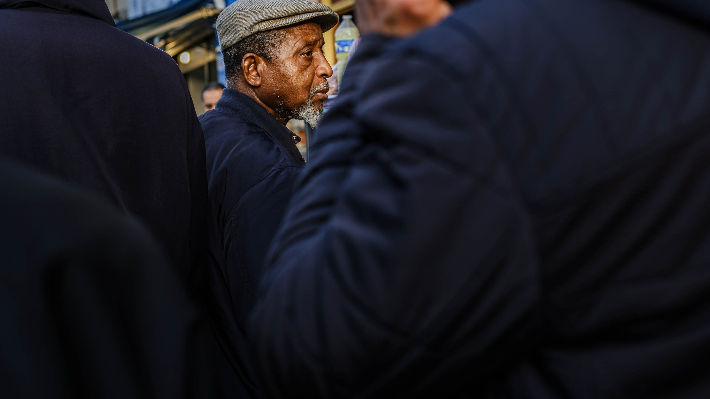

Digital and Analog

This photographic series, started in 2023, is born from a year when life’s struggles redefined my sense of presence. The title, I Will Be Around, carries a dual meaning: it speaks to the promise of being there for others, of staying connected despite the distance, but also to the reality of staying still when traveling or moving forward feels impossible.
These images are not a direct account of the challenges I faced but rather their consequences emotional ripples, quiet reflections, and moments of stillness. They are fragments of a world reshaped by necessity, a search for meaning and beauty within new limitations.
Through this series, I process the tension between longing and acceptance, between being there for others and navigating my own immobility. It is a ersonal journey, begun in a specific moment in time, and one that continues to evolve as I learn to find purpose and presence in the space I inhabit.